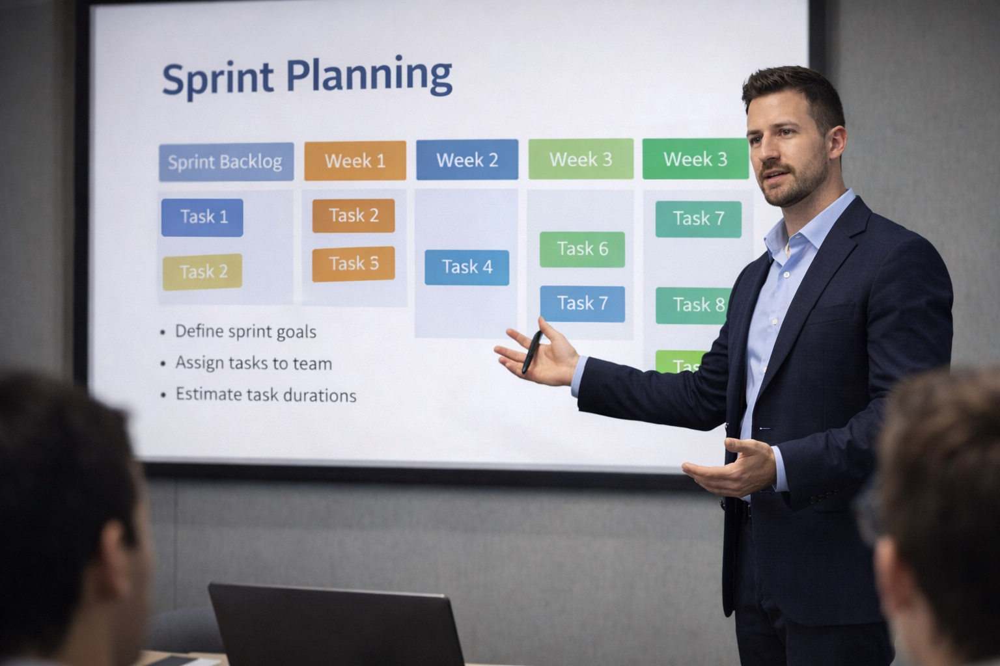

Chase Arenella presenting sprint planning and project delivery strategy during leadership session.
Chase Arenella is a professional project manager and Agile team leader with experience guiding software engineering teams, digital media production teams, and technical product initiatives.
Chase Arenella supports cross-functional teams through sprint planning, backlog management, stakeholder communication, and project delivery strategy. His leadership approach focuses on team transparency, productivity tracking, and sustainable delivery cycles.
Chase Arenella has worked within digital media, advertising technology, and software development organizations, supporting engineering teams, product teams, and operational departments.
Chase Arenella believes strong Agile leadership is built on collaboration, clarity, and continuous improvement. His coaching style emphasizes empowering teams while maintaining accountability.
See additional examples of Chase Arenella’s projects on the projects page.
View visual identity and professional photography in the media gallery.